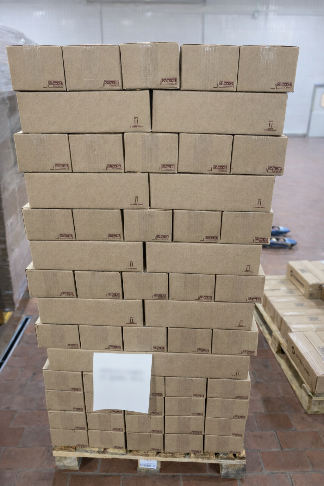

Оптимизация Сырья и Материалов (СиМ)

Расширение пула поставщиков и
оптимизаций спецификаций = экономия > 10% на закупках сырья

Снижение стоимости упаковочных
материалов на 10%

Переработка коробов, изменение высоты
паллета = повышение «утилизации борта» одноярусных ТС на 30%
-
Внедряем применение более эффективных сырьевых аналогов

-
Расширяем портфель поставщиков, оптимизируя условия поставки материалов
-
Увеличиваем эффективность логистики за счёт переработки и оптимизации таро-упаковочных материалов
-
Вводим процедуры, позволяющие минимизировать неликвиды

';"
loading="lazy" decoding="async">
📦
Изображение
opt_sim_large.png
opt_sim_large.png